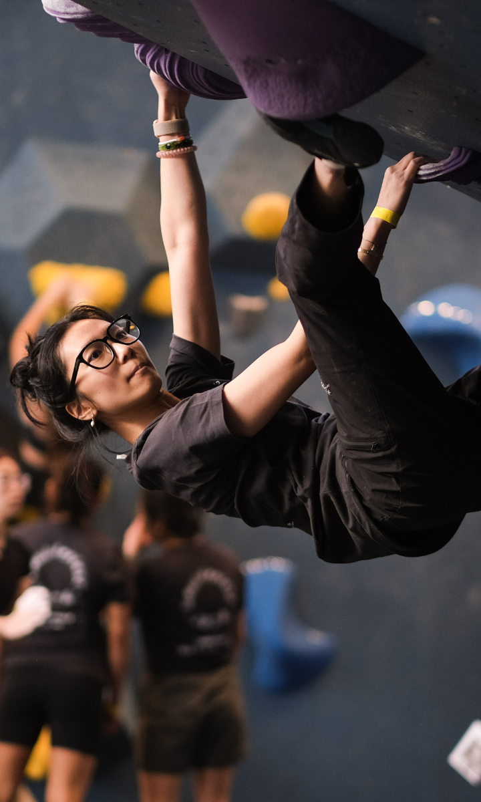

How I Started Rock Climbing
I tried many sports growing up, including football, basketball, tennis, and volleyball, but none of them were like rock climbing. Those sports usually involve other people. Whether they play with you or help you improve, you may feel like you have to live up to the expectations of everyone involved in your journey.
Rock climbing is different. When I started climbing, I could not believe what people were able to do or how they overcame fear and obstacles to reach the goals they had set for themselves. At first, I did not think this sport was going to be for me, but after giving it a chance, I realized how wrong I was.
For me, rock climbing is about giving myself time. I do not have to worry about other people's expectations or about letting a team down. Instead, I can focus on myself and ask, “How can I complete this climb?”
How Rock Climbing Changed Me
Looking back, I can clearly see how much I have improved since I started rock climbing. I am not only talking about becoming stronger or getting better at climbing. I am mostly talking about my personal growth. I am now a more confident person who tries to overcome my past limitations every time I get on the wall. I would encourage everyone to overcome their barriers and try rock climbing at least once in their life.
